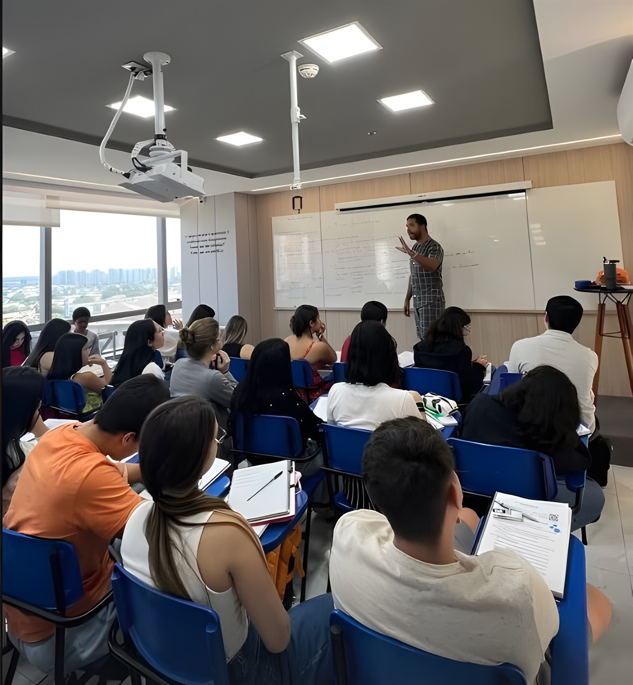

Técnica, clareza e propósito para escrever a redação que abre as portas da sua aprovação, em Manaus, com o Prof. Victor Hugo.
Resultados reais de quem passou pela redação do Victor Hugo: ENEM, SIS, MACRO e vestibulares.
Momentos reais das turmas do Victor Hugo Redação: aula, estudo e celebração.
Três pilares que sustentam todo o trabalho em sala de aula, do primeiro rascunho à correção final.
Estrutura de texto sólida, argumentação organizada e escrita objetiva, direto ao ponto que a banca avalia.
Repertório sociocultural aplicado com propriedade e leitura crítica de temas atuais, para uma redação com profundidade real.
Feedback direto por correção, acompanhamento próximo e canal aberto para tirar dúvidas fora da sala de aula.
Professor de redação dedicado a ENEM, MACRO, SIS e PSC, com uma sala de aula construída para gerar resultado, no coração de Manaus, no Edifício Cristal Tower.

Prof. Victor Hugo
Turmas com vagas limitadas. Fale agora pelo WhatsApp e garanta seu lugar.